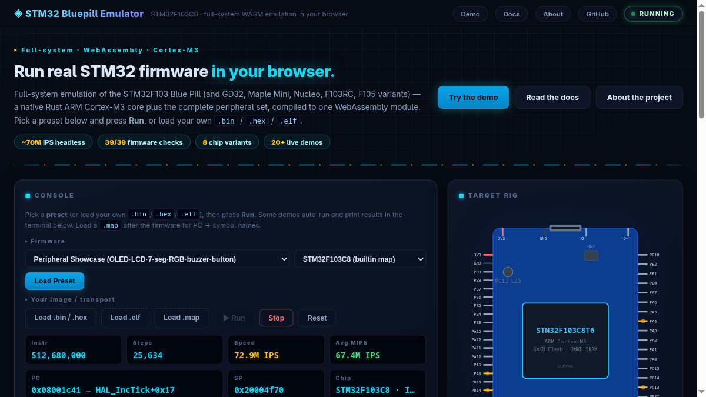

Why emulate a Blue Pill?
What is this?
The STM32 Bluepill Emulator is a full-system emulator for the STM32F103C8 “Blue Pill” microcontroller. It executes real, unmodified firmware — compiled Arduino sketches (STM32duino), libopencm3 and STM32Cube HAL programs — in your browser or in Node.js, without any hardware.
Instead of a simplified instruction interpreter, it runs a native Rust Cortex-M3 CPU interpreter plus a Rust peripheral emulator that implements the chip’s registers — GPIO, USART, SPI, I2C, TIM, ADC, DAC, DMA, CAN, RTC, CRC, NVIC, EXTI, FSMC and more — with realistic timing, interrupts and electrical behaviour, all in one WebAssembly module.
Why build an STM32 emulator?
- Test firmware without hardware — blink, UART, SPI Flash, I2C EEPROM, OLED, touchscreen, CAN and DMA sketches run in a browser tab or from the command line.
- CI & automated testing — run firmware headlessly with assertions; the 39-check integration test completes in a couple of seconds.
- Debug visibility —
--verbosemode traces every peripheral access, register read/write, interrupt delivery and DMA transfer in real time. - Learn embedded systems — see exactly how timers, DMA and interrupts interact, instruction by instruction, with no black boxes.
- No driver headaches — no ST-Link, no serial adapters, no USB driver issues. Just open a URL.
At a glance
How it works

The emulator uses a dual-engine architecture:
- Rust CPU — a native Thumb-2 interpreter executes Cortex-M3 instructions in adaptive 20K/50K batches (20K when IRQ/DMA pending, 50K idle;
batch_sizeoverrides), with exact instruction accounting. - Rust Peripheral WASM — the same WebAssembly module models every chip register with cycle-accurate timing, electrical behaviour (GPIO pull-ups, open-drain, slew), interrupt priorities and DMA transfers.
- Module Worker + OffscreenCanvas — browser emulation runs off-main-thread (
site/worker.js:1,site/index.html:449); canvas is transferred viaOffscreenCanvas(site/worker.js:117); frame stats ride the per-frame message (a SharedArrayBuffer channel was removed — it had no readers and its scheduler starved worker controls).
System map
Batch loop
Each emulation step follows this cycle (adaptive batch):
- Pump stdin — UART RX bytes from the host
- Process DMA transfers queued by peripherals
- Execute an adaptive batch in the Rust interpreter (20K busy / 50K idle)
- Tick all peripherals by the elapsed instruction count (
step_batch) - Deliver pending interrupts (up to 64 per batch, NVIC-priority ordered)
- Check watchdog reset flags
- Worker posts frame → main renders (OffscreenCanvas if transferred,
site/worker.js:168);UI_THROTTLE 10(site/index.html:441) — step 60fps, paint 6fps, never starves throughput
Interrupt path
Performance techniques
- Hookless instruction counting —
emu_start(begin,0,0,maxBatch)stops exactly at the batch limit, removing the per-instruction callback (~20% win). - Closed-form timer advance — CNT jumps to next event tick (124× on
advance()). - Adaptive 20K/50K batch (
pkg/emulator.js:698) — 20K keeps IRQ latency ≈1.1 ms; 50K doubles idle throughput, free when idle. - REG_POOL pooling (
pkg/emulator.js:228) — batch register transport reuses 3 mallocs (384 allocs/40M → pooled). - Worker + OffscreenCanvas (
site/worker.js:1) — off-main-thread + zero-copy canvas; the loop always yields viasetTimeoutso stop/UART/GPIO controls stay live; browser 8.6 MIPS headed. - UI_THROTTLE 10 (
site/index.html:441) — DOM 6fps vs emulation 60fps decoupling. - Bus binary search + Rust DMA pump — sorted-vector lookup (~99% hit) + DMA resolved entirely in Rust (flat op-plan).
Emulated peripherals
“Full” means register-accurate with timing, interrupts and DMA support where applicable.
| Peripheral | Instances | Details | Status |
|---|---|---|---|
| GPIO | A – D | Electrical model: pull-up/down, floating, open-drain, push-pull output, slew transitions. BSRR/BRR atomics. EXTI edge generation. | Full |
| USART | 1 – 5 | TXE/TC/RXNE flags, baud-rate byte-time pacing, overrun, TX/RX DMA. External probe for bidirectional data. | Full |
| SPI | 1 – 3 | Master mode, 8/16-bit, CPOL/CPHA, NSS software control. External device bus (flash, touchscreen, LCD). | Full |
| I2C | 1, 2 | Full state machine: START, address ACK, DR read/write, STOP. 7/10-bit addressing, stretching. Slave mode via host inject (OAR match, ADDR/STOPF, RXNE/TXE). SMBus PEC + ALERT. Bus recovery. | Full |
| TIM | 1, 2 – 14 | Up/down/center-aligned counting, PWM output, input capture, output compare, TRGO triggers (ADC, DMA), ARR/CCR registers, prescaler. | Full |
| ADC | 1 – 3 | Real conversion state machine (Tconv = SMP + 12.5 cycles), per-sequence channels (SQ1-16), EOC/EOCS, AWD, CONT, SWSTART. External triggers from TIM/EXTI. DAC loopback. | Full |
| DAC | 1, 2 | 12-bit right-aligned output, DOR register. Analog wire to ADC (DAC1→PA4/ch4, DAC2→PA5/ch5). Software triggers. | Full |
| DMA | 1 (7 ch), 2 (5 ch) | MEM2MEM, periph→mem, mem→periph. TC/HT/error flags, IRQ requests, configurable priority. Linked to USART/SPI/I2C/ADC/TIM. | Full |
| CAN | 1, 2 | TX/RX mailboxes, acceptance filters (list/bank modes), RX injection for testing. Extended 29-bit IDs. | Full |
| RTC | 1 | Second counter, alarm IRQ, prescaler. | Full |
| NVIC | — | Priority-based dispatch (4 bits), set/clear pending, enable/disable. Up to 64 IRQs per batch. SysTick debt drain. | Full |
| SysTick | — | 24-bit decrementing counter, TICKINT, clock source. Drives millis() / micros() via debt accounting. |
Full |
| SCB | — | CPUID, ICSR (PendSV/SysTick pending), AIRCR (reset), SHPR1-3 (fault priorities), SHCSR, CFSR, HFSR, BFAR. SLEEPDEEP control. | Full |
| EXTI | 0 – 18 | Rising/falling edge config, software trigger, IMR mask. Maps to NVIC IRQ 6–40. EXTI 11/15 trigger ADC external conversion. | Full |
| AFIO | — | Pin remapping (SWJCFG, SPI1, I2C1, USART, TIM, CAN). | Full |
| FSMC | — | 7 memory banks: NE1-4 NOR, NAND2/3, PC-Card. BCR/BTR/BWTR registers. External NOR backing via JS Uint8Array image. | Full |
| SPI Flash | ext | External device: JEDEC ID, read (0x03), fast read (0x0B), page program (0x02), sector erase, WREN/WRSR. Up to 2 buses. | Full |
| I2C EEPROM | ext | External device: byte read/write, sequential. Up to 2 buses. | Full |
| I2C OLED | ext | External device: SSD1306 framebuffer, I2C commands/data. | Full |
| Touchscreen | ext | External device: SPI XPT2046, deferred-reply model. | Full |
| LCD | ext | External device: SPI 128×64 framebuffer. | Full |
| BKP | — | Backup registers (10×16-bit), TAMPALARM flag. | Full |
| PWR | — | Power control: PDDS, LPDS, DBP. Deep-sleep gating of peripherals. | Full |
| FLASH | — | Access control, prefetch. FLASH_ACR register emulation. | Full |
| CRC | — | 32-bit CRC (polynomial 0x04C11DB7), DR register. | Full |
| IWDG | — | Independent watchdog: prescaler, reload, KEY register, reset on timeout. | Full |
| WWDG | — | Window watchdog: window size, counter, early interrupt. | Full |
| USB | FS device | EP0–7 toggle semantics, 1024 B PMA, RESET, SETUP/OUT injection, IN completion events, SOF engine + suspend/resume, double-buffered bulk, isochronous, detach + ESOF. CDC-ACM + DFU bootloader demos + page USB host. | Full |
| OTG_FS | host + device | Synopsys core: 8 host channels, device EP0–3, GRXSTSP queue, shared DFIFOs, SOF engine. Bare-metal HCD + CDC demos with scripted virtual peers. | Full |
| ITM | stimulus port 0 | Firmware printf channel draining as host-side events. |
Full |
Exceptions and interrupts
- NVIC priority dispatch — pending IRQs are sorted by priority and delivered in batches of up to 64 per step. A fairness mechanism prevents a single high-rate IRQ from starving others.
- SVC (supervisor call) — dispatched inline onto the real stack. The 32-byte Cortex-M exception frame is built on the real stack; the SVCall handler vector is resolved from the vector table.
- PendSV — pended via SCB ICSR PENDSVSET, dispatched at the next batch boundary. Used for context-switch testing.
- Faults — BusFault, UsageFault and HardFault set CFSR/HFSR/BFAR registers, pends the appropriate exception, and escalates to HardFault if the fault handler is not enabled in SHCSR.
- SysTick debt drain —
millis()/micros()accuracy via a debt counter: missed ticks are accumulated and delivered one-per-batch to avoid double-counting. - Deep sleep (SLEEPDEEP) — SCB SCR bit 2 freezes all peripherals except RTC and IWDG. Timers use
tick_frozen()to advance their delta base without processing state, preventing catch-up jumps on wake.
CLI usage
The command-line interface runs firmware headlessly in Node.js. Install globally or use npx:
# Run a bare ELF node pkg/cli.mjs firmware.elf # Feed UART input + run 200M instructions echo -n "AB" | node pkg/cli.mjs --max=200000000 firmware.elf # Use a config YAML with external devices node pkg/cli.mjs --config=config.yaml firmware.elf # Show help node pkg/cli.mjs -h # Trace all peripheral access node pkg/cli.mjs --verbose firmware.elf # Dump registers on exit node pkg/cli.mjs --regs firmware.elf
Flags
--config=<file.yaml>— configuration file: firmware path, external devices (SPI flash, I2C EEPROM, OLED, LCD, touchscreen, FSMC), UART baud.--max=<N>— stop after N instructions (default: unlimited).--map=<file.map>— load a linker map for PC → symbol name resolution in output.--uart=<file>— write UART TX bytes to a file (default: stdout).--regs— dump R0-R15, xPSR and SP on exit.--verbose— trace every peripheral read/write, DMA transfer and interrupt delivery.--periph-plugin=<file.mjs>— load a JS peripheral plugin (default export: array of{base, size, read, write}).-h/--help— show usage.
Library API
Use the emulator programmatically from Node.js or the browser:
import { createEmulator } from 'stm32f1-emu'; const emu = createEmulator({ firmware: elfBytes, // Uint8Array of .elf / .hex / .bin map: mapText, // optional linker map string ext_devices: [ { type: 'spi_flash', bus: 'SPI1', file: flashBin }, { type: 'i2c_eeprom', bus: 'I2C1', addr: 0x50, size: 65536 }, { type: 'i2c_oled', bus: 'I2C1', addr: 0x3C }, ], }); emu.run(200_000_000); // execute 200M instructions const uart = emu.getUartOutput(); // string of all UART TX bytes emu.uartRxBytes(Buffer.from('AB')); // inject bytes to UART RX const regs = emu.getRegisters(); // { r0, r1, ..., r15, xpsr } emu.close(); // free WASM memory
Browser demo features
The live demo (index.html) runs entirely in the browser with no server needed — just open the page or serve it with python3 -m http.server -d site. Worker off-thread + OffscreenCanvas + adaptive batch + batch_size option (site/worker.js:1, pkg/emulator.js) — see docs/USAGE.md.
43 built-in presets
Starter ten below — plus TIM DMA-burst PWM, servo, RTC clock, DAC sine, I2C scanner/slave, CAN chat, dual-CAN, USB CDC/serial, OTG CDC/host, DFU bootloader, Mini-RTOS, SD logger and per-board builds (Blue Pill, Maple Mini, Nucleo, F103RC).
| Preset | Description |
|---|---|
| Blink | LED on PC13 toggling at 1 Hz — the “hello world” of embedded |
| UART Echo | Type in the terminal, bytes echo back via USART1 |
| TIM2 PWM Fade | PA0 LED fading via TIM2 CH1 PWM output |
| ADC on UART | Reads ADC1 ch0 every second, prints adc=1023 |
| SPI Flash + I2C | Reads JEDEC ID from SPI flash, reads/writes I2C EEPROM, drives OLED |
| Comprehensive Test | 21-peripheral register-level validation |
| Peripheral Test | 39-check integration suite (GPIO, USART, SPI, I2C, TIM, ADC, DAC, DMA, CAN, RTC, CRC, IWDG, WWDG, BKP, PWR, SVC, PendSV, etc.) |
| Showcase | Live OLED, SPI LCD, 7-segment (74HC595), RGB LED (TIM2 PWM), buzzer, button (EXTI13) |
| WS2812 Strip | 8-LED rainbow animation over SPI1 + DMA1 CH3 |
| Custom Upload | Load your own .bin, .hex or .elf file |
Interactive features
- Blue Pill board SVG — LED glow, pin-activity amber highlights, per-pin toggle counts.
- GPIO panel — live readout of all 32 pins across ports A–D with colour-coded modes (output high, output low, input).
- UART terminal — real-time serial output with a text input for RX injection.
- Showcase peripherals — live OLED/LCD canvas, 7-segment display, RGB bar, buzzer indicator, button widget with EXTI13 interrupt.
- Chip selector — switch between six chips (Blue Pill C8/CB, Maple Mini, Nucleo, F103RC, GD32, SVD-based F105 with CAN2 + OTG) at load time; the preset menu filters to the selected chip.
Multi-chip support
Beyond the built-in STM32F103C8 map, the emulator supports any STM32F1-series chip via CMSIS System View Description (SVD) files:
- Built-in map — STM32F103C8 with hardcoded register addresses, always works, no external files needed. A chip table adds C8/CB, Maple Mini, Nucleo-F103RB, F103RC and GD32F103C8/CB/RB variants (flash/RAM sizes + DBGMCU IDCODE) on the same map.
- SVD-based map — parse any STM32F1xx SVD file to generate a peripheral map at runtime. Ships with
STM32F103.svdandSTM32F105xx.svd(connectivity line, CAN2). - Auto-registration — if an SVD omits ARM core peripherals (NVIC, SysTick, SCB at
0xE000Exxx), the emulator registers them automatically. This fixedmillis()/PendSV silently breaking on the F105 SVD. - Last-wins overlap — custom or SVD peripherals can shadow built-in entries, enabling per-chip overrides.
Custom peripherals
Add your own memory-mapped devices via JavaScript callbacks. The API matches the rp2040js bus model — register a base address, size, and read/write handlers:
Browser / library API
emu.addJsPeripheral({ base: 0x40018000, // absolute peripheral base address size: 0x400, read: (addr, size) => { /* return 0/1/2/4-byte value */ }, write: (addr, val, size) => { /* handle the write */ }, });
CLI plugin
// my_periph.mjs (default export: array of {base,size,read,write}) export default [{ base: 0x40018000, size: 0x400, read: (addr, sz) => 0xFF, write: (addr, v, sz) => {}, }];
node pkg/cli.mjs --periph-plugin=./my_periph.mjs firmware.elf
Callbacks receive the absolute address (not offset from base). The bus uses last-wins overlap, so a plugin can override a built-in peripheral.
Testing
The emulator has a three-tier test suite that runs in CI on every push:
Unit tests — node tests/test_all.mjs
719 asserts covering every peripheral in isolation: GPIO electrical model, pin events, USART TX/RX (incl. HDSEL loopback, LIN, IrDA/smartcard registers), ADC conversion timing, RC sample-and-hold, DAC→ADC loopback, external triggers (TIM/EXTI), RCC, SysTick, all timer modes, NVIC priority dispatch, CRC, SPI (incl. TI frame format), I2C state machine (incl. slave mode, 10-bit, PEC, SMBus ALERT), RTC alarm, PWR/FLASH, CAN mailboxes + filters, DMA pump, AFIO, EXTI, BKP, DAC, TIM6, FSMC, SDIO, USB, deep-sleep gating and fault escalation, plus DMA circular mode, GPIO LCKR, AFIO SWJ pin reservation, UID, MCO/RCC clock tree, PVD levels, WKUP/standby gating, SPI NSS output, CAN silent modes, TIM dead-time, ADC discontinuous/JAUTO, SDSC cards, ITM stimulus, ESOF and the HD/CL superset (UART4/5, TIM5, ADC3, CAN2, OTG) on the builtin map.
Firmware integration — node tests/canary.mjs
Runs the 24-peripheral Arduino sketch (tests/arduino_periph_test/) for 100M instructions with UART input “AB”. Asserts 39/39 checks pass (GPIO, USART TX, UART loopback, RCC, FLASH, PWR, BKP, IWDG, WWDG, RTC, CRC, DAC, ADC, AFIO, EXTI, CAN, SPI flash, I2C EEPROM, OLED, touchscreen, LCD, I2C2, SPI2, USART2, SVC, PendSV, DMA, UART RX, TIM2, EXTI0, EXTI1, EXTI13, CAN RX, SysTick, TIM3 PWM, TIM4, RTC Alarm). Completes in a couple of seconds; the full 200M run takes ~3s.
Browser tests — Playwright
24 browser checks running live firmware in Chromium via Playwright: every demo preset boots and prints (blink through dual-CAN, USB enumeration, I2C slave), every static page loads with zero console errors, and the docs viewer, nav and screenshots are asserted. Runs headlessly in CI on every push.
CI pipeline
cargo check— Rust compilation sanitytests/test_all.mjs— 719 unit assertstests/canary.mjs— 39/39 firmware checks- 200M full run —
echo -n "AB" | node pkg/cli.mjs --config=... --max=200000000 tests/test_emulator_js.mjs— browser run-loop path (createEmulator + run)tests/test_browser.mjs— Playwright Chromium: 200M firmware + GPIO + chip selectortests/test_firmware_formats.mjs— hex/map/ELF cross-format consistencytests/test_esm.mjs— ESM glue smoke test- Byte-exact artifact guard —
cmpbetweenpkg/andsite/for emulator.js, wasm glue and .wasm
Project links
- Live demo — 10 presets: blink, UART echo, TIM2 PWM fade, ADC-on-UART, SPI flash + I2C EEPROM/OLED, a 39-check peripheral test, the peripheral showcase (OLED, LCD, 7-seg, RGB, buzzer, button) and an 8-LED WS2812 strip streamed over SPI1 + DMA.
- GitHub repository — source, CLI, library API and full documentation.
- npm package —
npm install stm32f1-emu
FAQ
What firmware can I run?
.elf, .hex or raw .bin files. The UART TX output works out of the box; external devices (SPI flash, I2C EEPROM, OLED) are configured via the config YAML or the library API.How fast is it?
docs/ARCHITECTURE.md.Does it support all STM32F103 peripherals?
Can I use it in my own project?
npm install stm32f1-emu. Use createEmulator() from the library API section above, or load the WASM module directly in the browser. You can also write custom peripheral plugins in JavaScript.